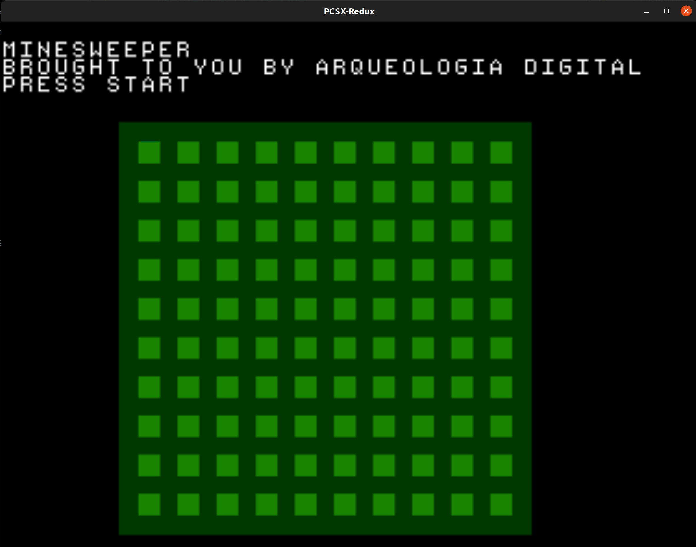
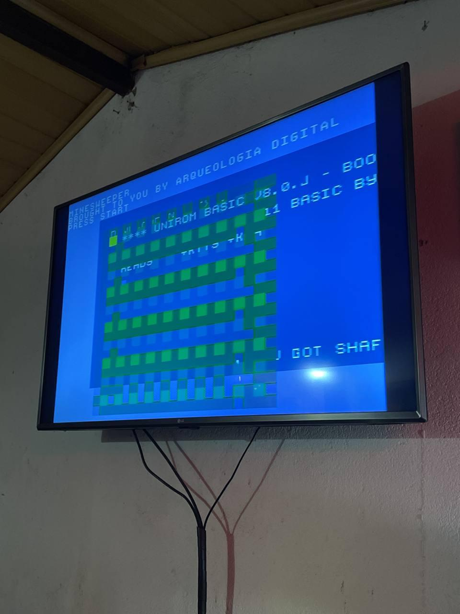

Using PSn00bSDK.
 
Do it preferably on your /tmp Steps written for Ubuntu/Debian
# Install deps
sudo apt install git build-essential make ninja-build
# Warning: this will uninstall your current version of cmake!
sudo apt purge cmake
# Installing cmake
wget https://github.com/Kitware/CMake/releases/download/v3.24.0-rc2/cmake-3.24.0-rc2-linux-x86_64.tar.gz
tar xzvf cmake-3.24.0-rc2-linux-x86_64.tar.gz
sudo cp cmake-3.24.0-rc2-linux-x86_64/bin/* /usr/local/bin
sudo cp -R cmake-3.24.0-rc2-linux-x86_64/share/* /usr/local/share
# Testing cmake
cmake --versionsudo mkdir /usr/local/mipsel-none-elf
cd /usr/local/mipsel-none-elf
sudo wget https://github.com/Lameguy64/PSn00bSDK/releases/download/v0.19/gcc-mipsel-none-elf-11.1.0-linux.zip
sudo unzip gcc-mipsel-none-elf-11.1.0-linux.zipgit submodule update --init --recursive
cmake --preset default .
cmake --build ./build
# Don't worry, this will install to /usr/local
sudo cmake --install ./buildDownload the pcsx-redux emulator from here
Unzip and then run the .AppImage file.
Copy the .AppImage file to your /usr/local/bin
sudo cp PCSX-Redux-HEAD-x86_64.AppImage /usr/local/bin/pcsx-reduxexport PSN00BSDK_LIBS=/usr/local/lib/libpsn00b/
make buildYou can then open PCSX-Redux, click on File > Open ISO, then select the file on build/mines.bin. Then, click on Emulation > Run.
You can also burn the build to a CD or load it on your favorite emulator.
Alternatively, if you have PCSX on your PATH, you can just run make run.
Follow this tutorial to make your own serial cable.
Finding a link cable in Brazil can be tricky, your best bet is to find one on MercadoLivre.
Download UNIROM from here and burn it to a CD. Also, clone nops and install mono.
You can test the cable by trying to find RX and GND first. Make your connections (using a breadboard) (remember that the TX on the serial cable end should go to RX) and turn on the PlayStation with the Unirom CD inside. Keep screen /dev/ttyUSB0 115200 running with your FTDI connected. If you’ve got the RX and GND right, you should see the message Unirom TTY redirect installed!. If not, change the cable and restart the console.
To test TX, you can try to upload the .exe file from the build directory using nops. Go to the nops directory, copy mines.exe to there, then:
mono nops.exe /exe mines.exe /m /dev/ttyUSB0Sending chunk... messages on your terminal and hopefully the game should start.Licensed CC BY SA 4.0.